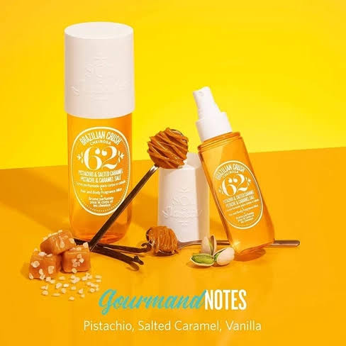
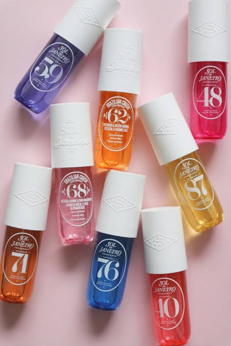
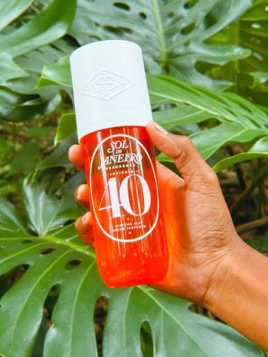
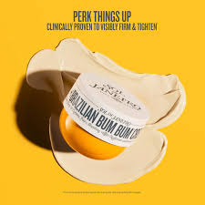

Cheirosa 62
Best-selling scent combining pistachio and salted caramel with warm vanilla.

Immerse yourself in our captivating range of Brazilian-inspired fragrances, each bottle capturing the essence of Rio's golden beaches and tropical warmth.

Best-selling scent combining pistachio and salted caramel with warm vanilla.

A blend of black amber plum and vanilla woods, embodying Brazilian nights.


Our iconic Brazilian Bum Bum Cream was inspired by the confidence and body positivity of Brazilian beach culture. This cult favourite combines powerful ingredients for visibly smoother, tighter-looking skin.